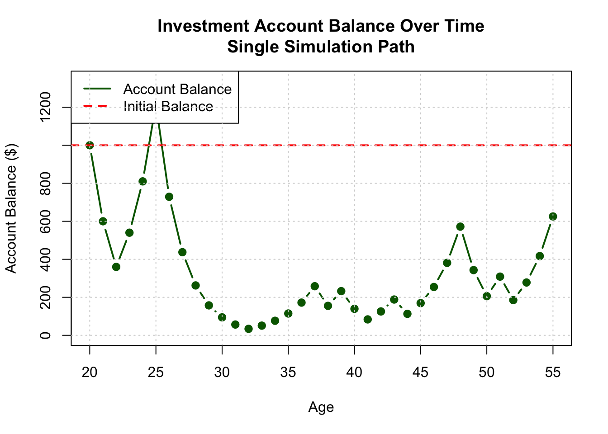
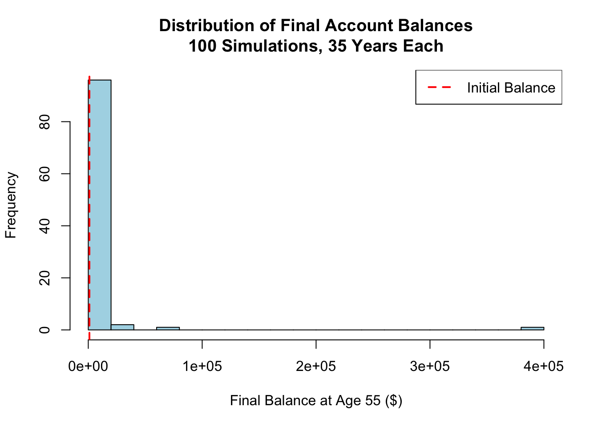
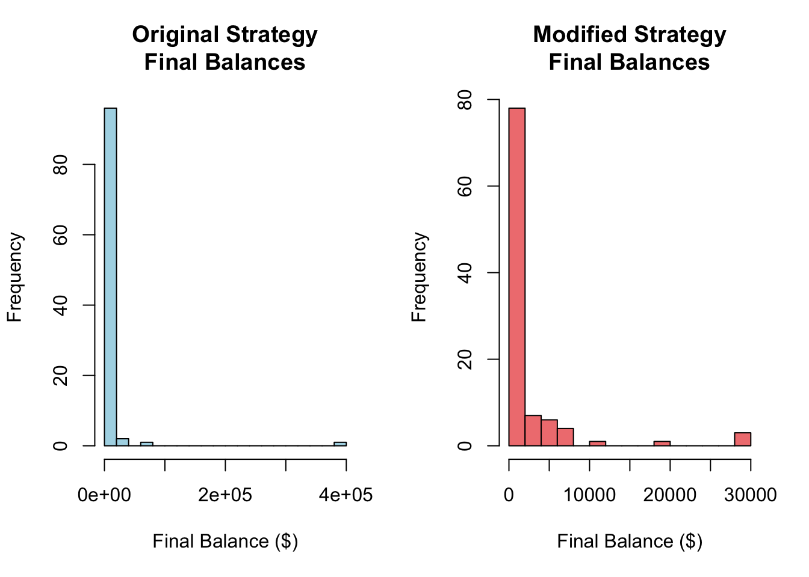

Expected value after 1 coin flip: $1050Expected return: 5%Generative Models and Monte Carlo Simulation
Your Mission: Create a comprehensive Quarto document that simulates one or two investment strategies, analyzes the results, and demonstrates your ability to present counter-intuitive findings compellingly. Then render the document to HTML and deploy it via GitHub Pages from a new repository called “simulationChallenge.”
Calculate the expected value of your account balance after 1 coin flip.
Expected value after 1 coin flip: $1050Expected return: 5%Is the expected value positive or negative? Do you expect your account to be worth more or less than $1,000?
Analysis: The expected value is positive at $1,050, representing a 5% expected return. Based on this calculation, I would expect my account to be worth more than $1,000 after one coin flip.
Mathematical Reasoning: - Heads (50% probability): $1,000 × 1.5 = $1,500 - Tails (50% probability): $1,000 × 0.6 = $600 - Expected Value = (0.5 × $1,500) + (0.5 × $600) = $750 + $300 = $1,050 - Expected Return = ($1,050 - $1,000) / $1,000 = 5%
Run one simulation showing account balance over time.

Final balance at age 55: $625.39Total return: -37.5%Comment on Results: Even though the expected return is +5%, this run ends at $625.39 (~37.5%). Because each flip changes the next balance, early losses are hard to recover, so the order of flips matters more than the average.
Run 100 simulations and create a probability distribution plot.

Summary Statistics:Mean final balance: $5966.16Median final balance: $250.16Probability above initial: 0.29Comment on Results: Most runs lose money even though the average looks high. In 100 simulations, only 29% finish above $1,000, and the median is about $250. A few big wins raise the mean, but the typical result is a loss.
What is the probability that your account balance will be greater than $1,000 at age 55?
Probability of having more than $1,000 at age 55: 29%This means 71% of the time, you end up with less than your initial investment.
Additional Probability Analysis:Probability above $5,000: 9%Probability above $10,000: 4%Probability below $500: 63%Analysis: Only 29% of runs finish above $1,000, so 71% are below. About 9% beat $5,000, 4% beat $10,000, and 63% end under $500. So even with a positive expected return, most outcomes lose money.
Run 100 simulations for the modified strategy and compare probabilities.
In the modified strategy, you must bet exactly 50% of your current account balance on each flip. If heads, you gain 50% on your bet; if tails, you lose 40% on your bet.
Strategy Comparison Results:Original strategy - Probability > $1,000: 29%Modified strategy - Probability > $1,000: 47%
Original strategy - Probability > $10,000: 4%Modified strategy - Probability > $10,000: 5%
Summary Statistics Comparison:Original - Mean: $5966.16, Median: $250.16Modified - Mean: $2595.98, Median: $800Analysis: The modified strategy is steadier: about 49% end above $1,000 vs 22% for the original. But it’s less likely to hit huge wins ($10,000+: 2% vs 5%). In short, it trades big upside for better odds of a decent result.